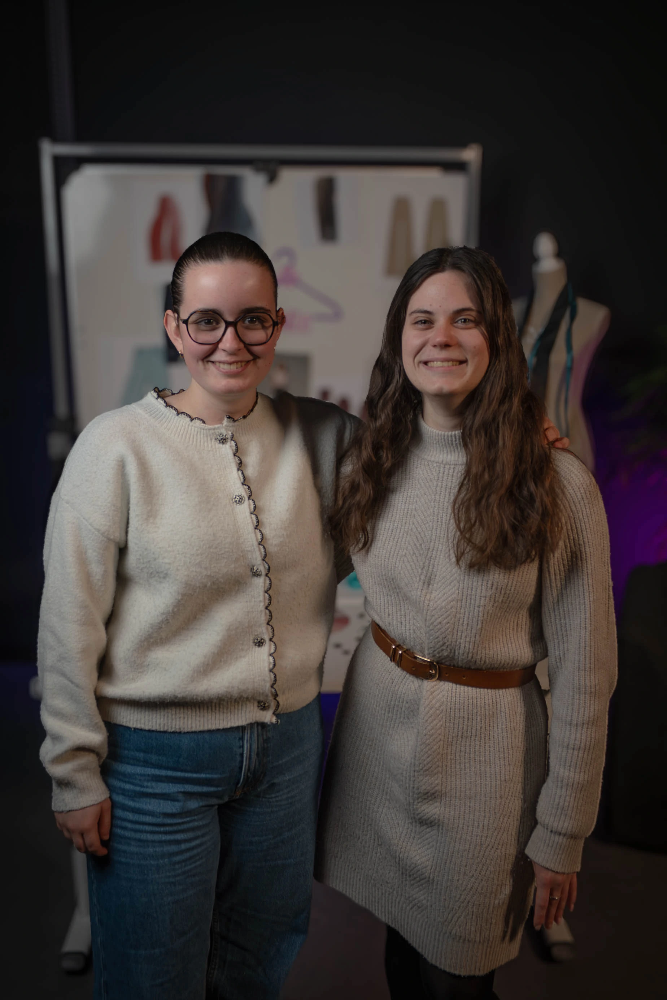

Notre Constat
Le projet T-Alaize est né d’un constat clair : la mode actuelle ne
répond pas à la diversité des morphologies féminines. Trop souvent,
faire du shopping devient une épreuve pour celles qui ne rentrent
pas dans les standards de taille proposés par la plupart des
marques. Et quand on en trouve… ils ne sont pas toujours modernes,
stylés ou valorisants.

Découvrez l'aventure T-Alaize
Notre équipe
Derrière T‑Alaize, il y a une équipe passionnée qui partage une
conviction simple : chaque femme mérite un vêtement qui la respecte,
la met en valeur et lui redonne confiance. Nous réunissons des
profils complémentaires design, modélisme, communication et
expérience client — avec un objectif commun : créer un pantalon
moderne, confortable et réellement adapté à toutes les morphologies.
Chaque pièce est pensée, ajustée et fabriquée avec soin, dans un
esprit d’écoute, d’inclusivité et de bienveillance. Chez nous, la
mode s’adapte aux femmes, jamais l’inverse.
 Je m'inscris pour suivre le projet
Je m'inscris pour suivre le projet